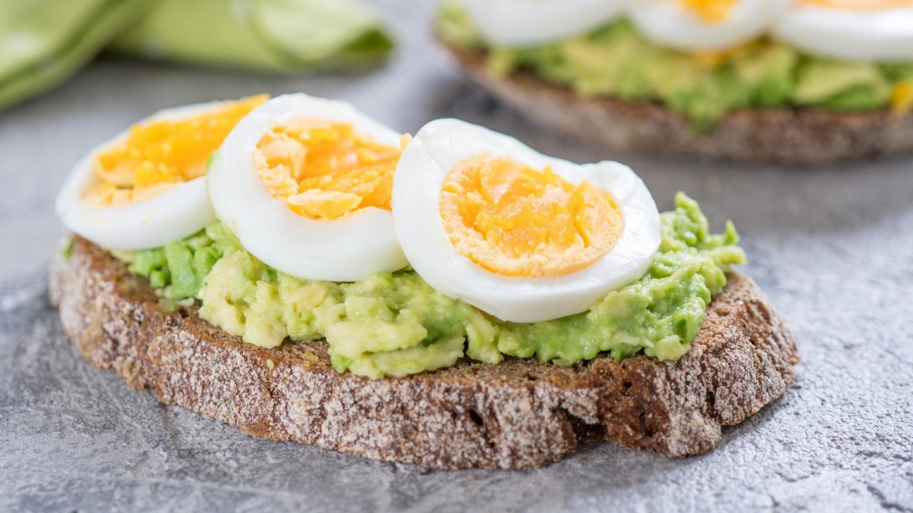
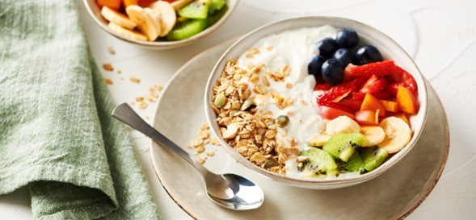

Pan integral con aguacate y huevo
El desayuno es la primera comida del día, por lo que el pan tostado con aguacate y huevo es el desayuno saludable perfecto
Bol de frutas con yogur y granola
En un tazón, añadimos el yogur griego y la miel. Mezclamos bien ambos ingredientes. Luego añadimos las frutas frescas picadas elegidas y la granola por encima.
